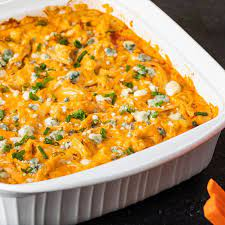

Buffalo Chicken Dip

Delicious Buffalo Chicken Dip
Enjoy this incredible and addictive dish that is an ideal appetizer for any party or special gathering
This wonderful dish consists of preparing a special buffalo chicken sauce, taking into account that there is a wide variety of sauces to accompany this special chicken, especially if it is made in a slow cooker
Ingredients
- 2 cans chunk chicken drained
- 2 packages cream cheese,softened
- 1 cup Ranch dressin
- Pepper sauce
- Shredded Cheddar cheese
- 1 bunch celery, cleaned and cut into 4 inch pieces
- 1 box chicken-flavored crackers
Steps
- Heat chicken and hot sauce in a skillet over medium heat, until heated through
- Stir in cream cheese and ranch dressing
- Cook, stirring until well blended and warm
- Mix in half shredded cheese, and transfer the mixture to a slow cooker
- Sprinkle the remaining cheese over the top, cover and cook on Low setting until hot and bubbly
- Serve with celery sticks and crackers